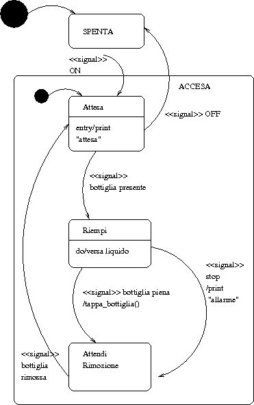

:: LPS - Esercizi sulle macchine UML ::
Esempio fatto in classe
Ho una macchina che fa da condizionatore oppure da pompa di calore. Passa da una modalità all'altra premendo il pulsante Inverno/Estate. Quando viene spenta, memorizza la modalità in cui si trova e al riavvio riparte da lì.
Quando viene avviata come pompa di calore, imposta la temperatura a 20°. Quando invece viene avviata come condizionatore, la temperatura è impostata a 24°. Quando si preme il tasto +, la temperatura viene incrementata, e viene decrementata quando si preme il tasto -.
Ecco alcune note salienti relative a questo esercizio:
- gli stati sono 2: condizionatore e pompa di calore
- t = temperatura; m = modalità
- quando si accende in una certa modalità, la temperatura viene impostata ad un certo valore: è la tipica azione di ingresso che si specifica nella voce entry di uno stato
- invece di avere dei loop per indicare la permanenza in uno stato con la pressione di + o -, si usano le transizioni interne
- abbiamo stabilito arbitrariamente che all'inizio della vita del sistema la modalità sia "condizionatore"
Esempio fatto in classe
Modellare un UML la carriera di uno studente. Egli può essere in corso, fuori corso, ritirato oppure laureato. Quando si iscrive è in corso; se sostiene gli esami rimane in corso; se non fa tutti gli esami che dovrebbe fare passa fuori corso; quando non si iscrive più si ritira; quando ha superato tutti gli esami si laurea.
La modellazione viene fatta ad alto livello.
Esempio fatto in classe
Una ditta offre seminari, uno a settimana. C'è l'oggetto settimanaSeminario che rappresenta una settimana del calendario. La settimana può essere disponibile, prenotataProvvisoriamente oppure prenotataDefinitivamente. All'inizio, una settimana è disponibile. Se un cliente la prenota, diventa prenotata provvisoriamente. Se il cliente quando prenota versa un anticipo, allora diventa prenotata definitivamente.
Noi dobbiamo modellare l'oggetto settimanaSeminario.
Note:
- la prenotazione sarebbe l'evento clientePrenotaSettimana(cliente, anticipo) che nel grafo è segnato come cpS(c,a)
ISPDialer
Vogliamo modellare un sistema ISPDialer, che cerca di connettersi ad un ISP tramite un modem. Può trovarsi in 3 stati: connesso, disconnesso oppure tentando di connettersi.
Quando tenta di connettersi, accadono molte cose:
- mette il modem in modalità off-hook
- aspetta per 20 secondi il dialtone
- se non arriva entro 20 secondi, passa a disconnesso e mette il modem in hook
- se invece arriva, esegue l'attività dialISP
- attende per 20 secondi il carrier dall'ISP: se non arriva, va in disconnesso e mette il modem in hook
- al termine della connessione, mette il modem in hook e va in disconnesso
Se arriva un segnale cancel in qualsiasi istante del tentativo di connessione, va in disconnesso e mette il modem in hook.
note:
- lo stato tentativo di connessione è a sua volta una macchina UML, perché è piuttosto complesso
- è ragionevole supporre che la entry di disconnesso metta il modem in hook, perché tutte le volte che nelle specifiche si parla di disconnessione, si parla anche di mettere il modem in modalità hook.
- le frecce senza etichetta rappresentano eventi di completamento
Applet Java
Si tratta dell'esercizio dell'applet Java in un browser, ma in salsa UML. Ecco le specifiche:
- quando viene caricata una pagina contenente un applet, questa viene istanziata
- il metodo init() viene chiamato al caricamento
- il metodo start() esegue l'applet all'inizio e ogni qualvolta la si resuscita dallo stato di stopped
- il metodo stop() termina temporaneamente l'esecuzione dell'applet
- il metodo destroy() viene chiamato quando il browser chiude la pagina
Orologio digitale
C'è un orologio digitale che segna l'ora come hh::mm. La variabile dh salva le ore, dm salva i minuti.
- quando viene acceso, l'ora è impostata su 00:00
- se premo il pulsante set, passo nello stato di modifica:
- se premo il pulsante M modifico i minuti
- se premo il pulsante H modifico l'ora
- se premo ancora set torno al funzionamento normale
- durante il funzionamento normale, l'ora non lampeggia
- durante il settaggio delle ore, l'ora lampeggia
5.06.07 - N°5 - Macchina per l'imbottigliamento
Quando è accesa, aspetta una bottiglia nella sede apposita. Un sensore la rileva, e comincia a riempirla. Un secondo sensore rileva che si è arrivati a livello, e provvede a farla tappare; a questo punto il sistema richiede la rimozione della bottiglia, e quando è stata rimossa (il sensore ce lo dice) la macchina torna in attesa.
Se si interrompe il riempimento in modo manuale, la bottiglia viene tappata e si entra in uno stato di allarme.
La macchina può essere spenta solo se si trova nello stato di attesa.

5.02.08 - N°2 - Bancomat
Quando è in idle, attende l'arrivo di un utente. Quando arriva l'utente:
- lo valida
- fa scegliere la transazione all'utente
- processa la transazione
- stampa la ricevuta
- torna in idle
Può anche trovarsi nello stato di manutenzione, in cui esegue due cose parallele:
- testing dei devices e del sistema
- caricamento del denaro
Finita la manutenzione, torna in idle.
Ascensore
Modellare con una macchina di stato UML il comportamento di un ascensore. L’ ascensore ha un tasto (interno) per ogni piano da servire, un tasto per aprire le porte se l’ascensore è fermo, ed un tasto di emergenza che se pigiato causa il suono di una sirena e mette l’ascensore “fuori servizio”. Ogni piano (ad eccezione del piano terra e dell’ultimo piano che ne hanno uno solo) ha due tasti con le frecce (SU) e (GIU') per chiamare l’ascensore al piano.
Innaffiatoio
Modellare con una macchina di stato UML il comportamento di un sistema d’irrigazione automatica. Il sistema è composto da un controllore e da un annaffiatoio. In modalità inverno il controllore invia il comando di erogazione dell’acqua ogni 12 ore e l’annaffiatoio eroga acqua per 15 minuti, dopo di che riceve il comando di interruzione di erogazione acqua. In modalità inverno l’erogazione dell’acqua è richiesta ogni 8 ore per la durata di 30 minuti. Il controllore è dotato di un sensore di umidità. Se il segnale che arriva da tale sensore è alto, l’erogazione dell’acqua, per il ciclo corrente, è sospesa; se il segnale è basso, l’acqua è erogata, nel ciclo corrente, per ulteriori 5 minuti.
21.02.07 - N°4 - Autenticazione Sito Web
Modellare con una macchina di stato composta UML la procedura di connessione di un utente ad un sito web che può riconoscere o no l’utente. La procedura di autenticazione dell’utente avviene tramite username e password (in passi sucessivi). L’utente ha al più 4 tentitivi per connettersi in caso di credenzialità errate. Ad ogni passo del processo di autenticazione, l’utente
ha a disposizione due bottoni: OK per procedere e CANCEL per interrompere la procedura. Al termine della procedura di autenticazione l’utente potrà essere stato autenticato, aver fallito laprocedura di autenticazione o interrotto la procedura.
Torna alla pagina di LPS